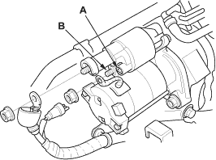

- Check the following items in the order listed until you find the open circuit.
- Check the BLK/WHT wire and connectors between the under-dash fuse/relay box and the ignition switch and between the under-dash fuse/relay box and the starter.
- Check the ignition switch, refer to the 2001 Civic Shop Manual (see page 22-131).
- Check the engine speed while cranking the engine.
Is the engine speed above 100 rpm (min-1)?
YES - Go to step 8.
NO - Replace the starter, or remove and disassemble it and check for the following until you find the cause.
- Excessively worn starter brushes
- Open circuit in commutator brushes
- Dirty or damaged helical splines or drive gear
- Faulty drive gear clutch
- Check the cranking voltage and current draw.
Is cranking voltage greater than or equal to 8.7 V and current draw less than or equal to 230 A?
YES - Go to step 9.
NO - Replace the starter, or remove and disassemble it and check for the following until you find the cause.
- Open circuit in starter armature commutator segments
- Starter armature dragging
- Shorted armature winding
- Excessive drag in engine
- Remove the starter, and inspect its drive gear and the flywheel ring gear for damage. Replace any damaged parts.

- Check the hold-in coil for continuity between the S terminal (A) and the armature housing (ground). There should be continuity.
- If there is continuity, go to step 2.
- If there is no continuity, replace the solenoid.

- Check the pull-in coil for continuity between the S terminal (A) and M terminal (B). There should be continuity.
- If there is continuity, the solenoid is OK.
- If there is no continuity, replace the solenoid.